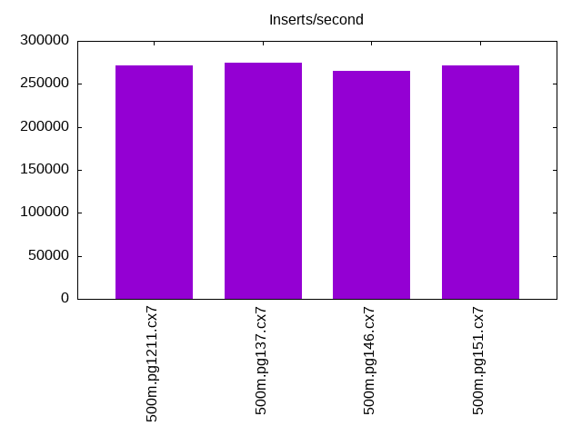
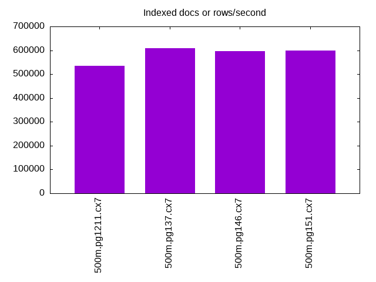
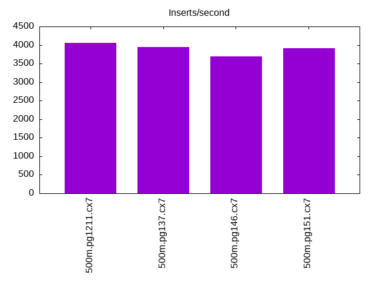
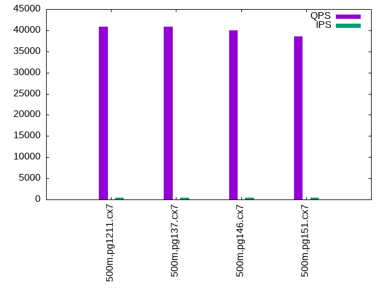
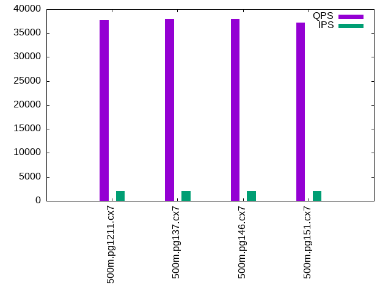
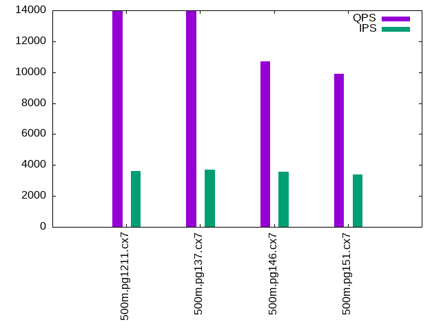

This is a report for the insert benchmark with 500M docs and 4 client(s). It is generated by scripts (bash, awk, sed) and Tufte might not be impressed. An overview of the insert benchmark is here and a short update is here. Below, by DBMS, I mean DBMS+version.config. An example is my8020.c10b40 where my means MySQL, 8020 is version 8.0.20 and c10b40 is the name for the configuration file.
The test server has 8 AMD cores, 16G RAM and an NVMe SSD. It is described here as the Beelink. The benchmark was run with 4 clients and there were 1 or 2 connections per client (1 for queries, 1 for inserts). The benchmark loads 500M rows without secondary indexes, creates secondary indexes, loads another 10M rows then does 3 read+write tests for one hour each that do queries as fast as possible with 100, 500 and then 1000 writes/second/client concurrent with the queries. The database doesn't fit in memory and parts of the benchmark are IO-bound. Clients and the DBMS share one server. The per-database configs are in the per-database subdirectories here.
The tested DBMS are:
The numbers are inserts/s for l.i0 and l.i1, indexed docs (or rows) /s for l.x and queries/s for q*.2. The values are the average rate over the entire test for inserts (IPS) and queries (QPS). The range of values for IPS and QPS is split into 3 parts: bottom 25%, middle 50%, top 25%. Values in the bottom 25% have a red background, values in the top 25% have a green background and values in the middle have no color. A gray background is used for values that can be ignored because the DBMS did not sustain the target insert rate. Red backgrounds are not used when the minimum value is within 80% of the max value.
| dbms | l.i0 | l.x | l.i1 | q100.1 | q500.1 | q1000.1 |
|---|---|---|---|---|---|---|
| 500m.pg1211.cx7 | 271739 | 534866 | 4063 | 40902 | 37754 | 13981 |
| 500m.pg137.cx7 | 275028 | 609878 | 3946 | 40901 | 37991 | 13974 |
| 500m.pg146.cx7 | 265252 | 596067 | 3691 | 39961 | 37908 | 10711 |
| 500m.pg151.cx7 | 271887 | 598206 | 3912 | 38615 | 37147 | 9913 |
This lists the average rate of inserts/s for the tests that do inserts concurrent with queries. For such tests the query rate is listed in the table above. The read+write tests are setup so that the insert rate should match the target rate every second. Cells that are not at least 95% of the target have a red background to indicate a failure to satisfy the target.
| dbms | q100.1 | q500.1 | q1000.1 |
|---|---|---|---|
| pg1211.cx7 | 399 | 1996 | 3599 |
| pg137.cx7 | 399 | 1994 | 3683 |
| pg146.cx7 | 399 | 1996 | 3562 |
| pg151.cx7 | 399 | 1996 | 3372 |
| target | 400 | 2000 | 4000 |
l.i0: load without secondary indexes. Graphs for performance per 1-second interval are here.
Average throughput:
Insert response time histogram: each cell has the percentage of responses that take <= the time in the header and max is the max response time in seconds. For the max column values in the top 25% of the range have a red background and in the bottom 25% of the range have a green background. The red background is not used when the min value is within 80% of the max value.
| dbms | 256us | 1ms | 4ms | 16ms | 64ms | 256ms | 1s | 4s | 16s | gt | max |
|---|---|---|---|---|---|---|---|---|---|---|---|
| pg1211.cx7 | 99.911 | 0.087 | 0.001 | 0.001 | 0.211 | ||||||
| pg137.cx7 | 99.901 | 0.096 | 0.002 | 0.001 | nonzero | 0.310 | |||||
| pg146.cx7 | 99.880 | 0.114 | 0.002 | 0.002 | 0.001 | nonzero | 1.346 | ||||
| pg151.cx7 | 99.875 | 0.122 | 0.002 | 0.001 | nonzero | 0.316 |
Performance metrics for the DBMS listed above. Some are normalized by throughput, others are not. Legend for results is here.
ips qps rps rmbps wps wmbps rpq rkbpq wpi wkbpi csps cpups cspq cpupq dbgb1 dbgb2 rss maxop p50 p99 tag 271739 0 384 3.7 970.0 112.2 0.001 0.014 0.004 0.423 27548 79.6 0.101 23 47.8 69.5 0.0 0.211 68925 62331 500m.pg1211.cx7 275028 0 360 3.7 655.7 118.4 0.001 0.014 0.002 0.441 27820 79.6 0.101 23 47.8 72.3 3.7 0.310 69525 62133 500m.pg137.cx7 265252 0 325 2.6 771.8 119.7 0.001 0.010 0.003 0.462 26244 79.3 0.099 24 47.8 79.8 6.6 1.346 67726 42348 500m.pg146.cx7 271887 0 352 3.2 765.4 124.8 0.001 0.012 0.003 0.470 27190 79.9 0.100 24 47.8 80.4 0.0 0.316 69051 60135 500m.pg151.cx7
l.x: create secondary indexes.
Average throughput:
Performance metrics for the DBMS listed above. Some are normalized by throughput, others are not. Legend for results is here.
ips qps rps rmbps wps wmbps rpq rkbpq wpi wkbpi csps cpups cspq cpupq dbgb1 dbgb2 rss maxop p50 p99 tag 534866 0 1260 144.3 1906.8 223.7 0.002 0.276 0.004 0.428 3764 35.2 0.007 5 91.9 129.9 0.0 0.005 NA NA 500m.pg1211.cx7 609878 0 1293 159.8 776.4 174.5 0.002 0.268 0.001 0.293 2920 37.0 0.005 5 91.9 116.4 0.0 0.021 NA NA 500m.pg137.cx7 596067 0 1278 155.8 727.0 164.9 0.002 0.268 0.001 0.283 2731 35.5 0.005 5 91.9 123.9 0.0 0.004 NA NA 500m.pg146.cx7 598206 0 1256 155.9 723.6 164.1 0.002 0.267 0.001 0.281 2974 35.0 0.005 5 91.9 124.5 0.0 0.004 NA NA 500m.pg151.cx7
l.i1: continue load after secondary indexes created. Graphs for performance per 1-second interval are here.
Average throughput:
Insert response time histogram: each cell has the percentage of responses that take <= the time in the header and max is the max response time in seconds. For the max column values in the top 25% of the range have a red background and in the bottom 25% of the range have a green background. The red background is not used when the min value is within 80% of the max value.
| dbms | 256us | 1ms | 4ms | 16ms | 64ms | 256ms | 1s | 4s | 16s | gt | max |
|---|---|---|---|---|---|---|---|---|---|---|---|
| pg1211.cx7 | 7.334 | 71.559 | 19.840 | 1.266 | 0.001 | 1.035 | |||||
| pg137.cx7 | 7.355 | 70.803 | 20.460 | 1.379 | 0.002 | 1.063 | |||||
| pg146.cx7 | 3.780 | 68.566 | 27.342 | 0.312 | 0.001 | 1.014 | |||||
| pg151.cx7 | 6.331 | 69.801 | 23.504 | 0.362 | 0.002 | 1.097 |
Performance metrics for the DBMS listed above. Some are normalized by throughput, others are not. Legend for results is here.
ips qps rps rmbps wps wmbps rpq rkbpq wpi wkbpi csps cpups cspq cpupq dbgb1 dbgb2 rss maxop p50 p99 tag 4063 0 6618 53.1 7038.9 111.6 1.629 13.374 1.732 28.122 15789 9.6 3.886 189 94.9 129.1 0.0 1.035 1049 150 500m.pg1211.cx7 3946 0 6468 52.7 7072.6 115.2 1.639 13.664 1.792 29.888 15602 9.6 3.954 195 94.9 125.3 0.0 1.063 949 150 500m.pg137.cx7 3691 0 6049 48.8 6438.3 102.2 1.639 13.534 1.744 28.339 14585 8.9 3.951 193 94.9 128.2 0.0 1.014 949 250 500m.pg146.cx7 3912 0 6351 51.0 6883.5 106.9 1.623 13.348 1.759 27.976 15292 9.3 3.909 190 94.9 128.5 0.0 1.097 1049 250 500m.pg151.cx7
q100.1: range queries with 100 insert/s per client. Graphs for performance per 1-second interval are here.
Average throughput:
Query response time histogram: each cell has the percentage of responses that take <= the time in the header and max is the max response time in seconds. For max values in the top 25% of the range have a red background and in the bottom 25% of the range have a green background. The red background is not used when the min value is within 80% of the max value.
| dbms | 256us | 1ms | 4ms | 16ms | 64ms | 256ms | 1s | 4s | 16s | gt | max |
|---|---|---|---|---|---|---|---|---|---|---|---|
| pg1211.cx7 | 99.703 | 0.287 | 0.008 | 0.001 | nonzero | 0.054 | |||||
| pg137.cx7 | 99.735 | 0.250 | 0.012 | 0.003 | nonzero | nonzero | 0.072 | ||||
| pg146.cx7 | 99.662 | 0.314 | 0.014 | 0.008 | 0.001 | nonzero | 0.094 | ||||
| pg151.cx7 | 99.606 | 0.368 | 0.013 | 0.008 | 0.004 | nonzero | 0.120 |
Insert response time histogram: each cell has the percentage of responses that take <= the time in the header and max is the max response time in seconds. For max values in the top 25% of the range have a red background and in the bottom 25% of the range have a green background. The red background is not used when the min value is within 80% of the max value.
| dbms | 256us | 1ms | 4ms | 16ms | 64ms | 256ms | 1s | 4s | 16s | gt | max |
|---|---|---|---|---|---|---|---|---|---|---|---|
| pg1211.cx7 | 40.153 | 57.503 | 2.344 | 0.174 | |||||||
| pg137.cx7 | 49.948 | 48.618 | 1.434 | 0.226 | |||||||
| pg146.cx7 | 46.715 | 50.521 | 2.764 | 0.228 | |||||||
| pg151.cx7 | 23.799 | 67.997 | 8.125 | 0.076 | 0.003 | 1.025 |
Performance metrics for the DBMS listed above. Some are normalized by throughput, others are not. Legend for results is here.
ips qps rps rmbps wps wmbps rpq rkbpq wpi wkbpi csps cpups cspq cpupq dbgb1 dbgb2 rss maxop p50 p99 tag 399 40902 740 5.9 1051.6 16.5 0.018 0.149 2.634 42.250 157688 50.6 3.855 99 95.7 112.3 0.0 0.054 10469 5658 500m.pg1211.cx7 399 40901 760 6.1 1173.5 17.5 0.019 0.153 2.940 44.996 157706 50.6 3.856 99 95.7 107.7 0.0 0.072 10408 5358 500m.pg137.cx7 399 39961 751 6.0 1209.9 17.6 0.019 0.154 3.031 45.142 154084 50.2 3.856 100 95.7 110.4 0.0 0.094 10297 3820 500m.pg146.cx7 399 38615 752 6.0 1158.9 17.2 0.019 0.160 2.903 44.073 149096 50.0 3.861 104 95.7 110.3 0.0 0.120 9957 3021 500m.pg151.cx7
q500.1: range queries with 500 insert/s per client. Graphs for performance per 1-second interval are here.
Average throughput:
Query response time histogram: each cell has the percentage of responses that take <= the time in the header and max is the max response time in seconds. For max values in the top 25% of the range have a red background and in the bottom 25% of the range have a green background. The red background is not used when the min value is within 80% of the max value.
| dbms | 256us | 1ms | 4ms | 16ms | 64ms | 256ms | 1s | 4s | 16s | gt | max |
|---|---|---|---|---|---|---|---|---|---|---|---|
| pg1211.cx7 | 99.645 | 0.318 | 0.032 | 0.004 | 0.001 | nonzero | 0.087 | ||||
| pg137.cx7 | 99.613 | 0.350 | 0.033 | 0.004 | 0.001 | nonzero | 0.151 | ||||
| pg146.cx7 | 99.478 | 0.484 | 0.033 | 0.005 | 0.001 | nonzero | 0.135 | ||||
| pg151.cx7 | 99.447 | 0.515 | 0.034 | 0.004 | 0.001 | nonzero | 0.120 |
Insert response time histogram: each cell has the percentage of responses that take <= the time in the header and max is the max response time in seconds. For max values in the top 25% of the range have a red background and in the bottom 25% of the range have a green background. The red background is not used when the min value is within 80% of the max value.
| dbms | 256us | 1ms | 4ms | 16ms | 64ms | 256ms | 1s | 4s | 16s | gt | max |
|---|---|---|---|---|---|---|---|---|---|---|---|
| pg1211.cx7 | 44.830 | 47.317 | 7.832 | 0.022 | 0.492 | ||||||
| pg137.cx7 | 40.636 | 50.832 | 8.460 | 0.072 | 0.420 | ||||||
| pg146.cx7 | 19.394 | 66.900 | 13.672 | 0.034 | 0.383 | ||||||
| pg151.cx7 | 22.477 | 70.146 | 7.376 | 0.001 | 0.257 |
Performance metrics for the DBMS listed above. Some are normalized by throughput, others are not. Legend for results is here.
ips qps rps rmbps wps wmbps rpq rkbpq wpi wkbpi csps cpups cspq cpupq dbgb1 dbgb2 rss maxop p50 p99 tag 1996 37754 2944 23.3 4437.1 65.7 0.078 0.632 2.223 33.704 147821 53.1 3.915 113 96.7 111.4 0.0 0.087 9478 8503 500m.pg1211.cx7 1994 37991 2971 23.5 4465.9 66.5 0.078 0.635 2.240 34.169 148681 53.1 3.914 112 96.7 110.6 0.0 0.151 9529 8503 500m.pg137.cx7 1996 37908 2966 23.5 4367.6 65.5 0.078 0.635 2.188 33.616 148399 53.1 3.915 112 96.7 113.7 0.0 0.135 9462 8423 500m.pg146.cx7 1996 37147 2966 23.5 4373.1 65.5 0.080 0.648 2.191 33.590 145467 53.1 3.916 114 96.7 113.8 0.0 0.120 9321 8295 500m.pg151.cx7
q1000.1: range queries with 1000 insert/s per client. Graphs for performance per 1-second interval are here.
Average throughput:
Query response time histogram: each cell has the percentage of responses that take <= the time in the header and max is the max response time in seconds. For max values in the top 25% of the range have a red background and in the bottom 25% of the range have a green background. The red background is not used when the min value is within 80% of the max value.
| dbms | 256us | 1ms | 4ms | 16ms | 64ms | 256ms | 1s | 4s | 16s | gt | max |
|---|---|---|---|---|---|---|---|---|---|---|---|
| pg1211.cx7 | 87.293 | 10.821 | 0.953 | 0.793 | 0.136 | 0.005 | 0.218 | ||||
| pg137.cx7 | 86.774 | 11.258 | 1.040 | 0.804 | 0.120 | 0.005 | 0.190 | ||||
| pg146.cx7 | 80.645 | 16.569 | 1.389 | 1.164 | 0.221 | 0.011 | 0.211 | ||||
| pg151.cx7 | 79.887 | 17.158 | 1.401 | 1.238 | 0.305 | 0.011 | 0.218 |
Insert response time histogram: each cell has the percentage of responses that take <= the time in the header and max is the max response time in seconds. For max values in the top 25% of the range have a red background and in the bottom 25% of the range have a green background. The red background is not used when the min value is within 80% of the max value.
| dbms | 256us | 1ms | 4ms | 16ms | 64ms | 256ms | 1s | 4s | 16s | gt | max |
|---|---|---|---|---|---|---|---|---|---|---|---|
| pg1211.cx7 | 17.787 | 67.959 | 13.945 | 0.309 | 0.691 | ||||||
| pg137.cx7 | 20.092 | 66.543 | 13.168 | 0.197 | 0.507 | ||||||
| pg146.cx7 | 13.073 | 68.040 | 18.774 | 0.113 | 0.510 | ||||||
| pg151.cx7 | 11.138 | 64.710 | 24.020 | 0.132 | 0.461 |
Performance metrics for the DBMS listed above. Some are normalized by throughput, others are not. Legend for results is here.
ips qps rps rmbps wps wmbps rpq rkbpq wpi wkbpi csps cpups cspq cpupq dbgb1 dbgb2 rss maxop p50 p99 tag 3599 13981 6525 52.4 6840.6 104.4 0.467 3.835 1.901 29.707 64616 36.1 4.622 207 98.2 120.8 0.0 0.218 3485 863 500m.pg1211.cx7 3683 13974 6796 54.5 7066.1 107.1 0.486 3.996 1.919 29.767 65135 36.6 4.661 210 98.2 121.0 0.0 0.190 3452 895 500m.pg137.cx7 3562 10711 6528 52.4 6696.8 102.4 0.610 5.005 1.880 29.429 52552 33.1 4.907 247 98.2 125.6 0.0 0.211 2621 879 500m.pg146.cx7 3372 9913 6168 49.4 6342.9 97.8 0.622 5.107 1.881 29.701 48935 31.3 4.936 253 98.2 125.4 0.0 0.218 2430 799 500m.pg151.cx7
l.i0: load without secondary indexes
Performance metrics for all DBMS, not just the ones listed above. Some are normalized by throughput, others are not. Legend for results is here.
ips qps rps rmbps wps wmbps rpq rkbpq wpi wkbpi csps cpups cspq cpupq dbgb1 dbgb2 rss maxop p50 p99 tag 271739 0 384 3.7 970.0 112.2 0.001 0.014 0.004 0.423 27548 79.6 0.101 23 47.8 69.5 0.0 0.211 68925 62331 500m.pg1211.cx7 275028 0 360 3.7 655.7 118.4 0.001 0.014 0.002 0.441 27820 79.6 0.101 23 47.8 72.3 3.7 0.310 69525 62133 500m.pg137.cx7 265252 0 325 2.6 771.8 119.7 0.001 0.010 0.003 0.462 26244 79.3 0.099 24 47.8 79.8 6.6 1.346 67726 42348 500m.pg146.cx7 271887 0 352 3.2 765.4 124.8 0.001 0.012 0.003 0.470 27190 79.9 0.100 24 47.8 80.4 0.0 0.316 69051 60135 500m.pg151.cx7
l.x: create secondary indexes
Performance metrics for all DBMS, not just the ones listed above. Some are normalized by throughput, others are not. Legend for results is here.
ips qps rps rmbps wps wmbps rpq rkbpq wpi wkbpi csps cpups cspq cpupq dbgb1 dbgb2 rss maxop p50 p99 tag 534866 0 1260 144.3 1906.8 223.7 0.002 0.276 0.004 0.428 3764 35.2 0.007 5 91.9 129.9 0.0 0.005 NA NA 500m.pg1211.cx7 609878 0 1293 159.8 776.4 174.5 0.002 0.268 0.001 0.293 2920 37.0 0.005 5 91.9 116.4 0.0 0.021 NA NA 500m.pg137.cx7 596067 0 1278 155.8 727.0 164.9 0.002 0.268 0.001 0.283 2731 35.5 0.005 5 91.9 123.9 0.0 0.004 NA NA 500m.pg146.cx7 598206 0 1256 155.9 723.6 164.1 0.002 0.267 0.001 0.281 2974 35.0 0.005 5 91.9 124.5 0.0 0.004 NA NA 500m.pg151.cx7
l.i1: continue load after secondary indexes created
Performance metrics for all DBMS, not just the ones listed above. Some are normalized by throughput, others are not. Legend for results is here.
ips qps rps rmbps wps wmbps rpq rkbpq wpi wkbpi csps cpups cspq cpupq dbgb1 dbgb2 rss maxop p50 p99 tag 4063 0 6618 53.1 7038.9 111.6 1.629 13.374 1.732 28.122 15789 9.6 3.886 189 94.9 129.1 0.0 1.035 1049 150 500m.pg1211.cx7 3946 0 6468 52.7 7072.6 115.2 1.639 13.664 1.792 29.888 15602 9.6 3.954 195 94.9 125.3 0.0 1.063 949 150 500m.pg137.cx7 3691 0 6049 48.8 6438.3 102.2 1.639 13.534 1.744 28.339 14585 8.9 3.951 193 94.9 128.2 0.0 1.014 949 250 500m.pg146.cx7 3912 0 6351 51.0 6883.5 106.9 1.623 13.348 1.759 27.976 15292 9.3 3.909 190 94.9 128.5 0.0 1.097 1049 250 500m.pg151.cx7
q100.1: range queries with 100 insert/s per client
Performance metrics for all DBMS, not just the ones listed above. Some are normalized by throughput, others are not. Legend for results is here.
ips qps rps rmbps wps wmbps rpq rkbpq wpi wkbpi csps cpups cspq cpupq dbgb1 dbgb2 rss maxop p50 p99 tag 399 40902 740 5.9 1051.6 16.5 0.018 0.149 2.634 42.250 157688 50.6 3.855 99 95.7 112.3 0.0 0.054 10469 5658 500m.pg1211.cx7 399 40901 760 6.1 1173.5 17.5 0.019 0.153 2.940 44.996 157706 50.6 3.856 99 95.7 107.7 0.0 0.072 10408 5358 500m.pg137.cx7 399 39961 751 6.0 1209.9 17.6 0.019 0.154 3.031 45.142 154084 50.2 3.856 100 95.7 110.4 0.0 0.094 10297 3820 500m.pg146.cx7 399 38615 752 6.0 1158.9 17.2 0.019 0.160 2.903 44.073 149096 50.0 3.861 104 95.7 110.3 0.0 0.120 9957 3021 500m.pg151.cx7
q500.1: range queries with 500 insert/s per client
Performance metrics for all DBMS, not just the ones listed above. Some are normalized by throughput, others are not. Legend for results is here.
ips qps rps rmbps wps wmbps rpq rkbpq wpi wkbpi csps cpups cspq cpupq dbgb1 dbgb2 rss maxop p50 p99 tag 1996 37754 2944 23.3 4437.1 65.7 0.078 0.632 2.223 33.704 147821 53.1 3.915 113 96.7 111.4 0.0 0.087 9478 8503 500m.pg1211.cx7 1994 37991 2971 23.5 4465.9 66.5 0.078 0.635 2.240 34.169 148681 53.1 3.914 112 96.7 110.6 0.0 0.151 9529 8503 500m.pg137.cx7 1996 37908 2966 23.5 4367.6 65.5 0.078 0.635 2.188 33.616 148399 53.1 3.915 112 96.7 113.7 0.0 0.135 9462 8423 500m.pg146.cx7 1996 37147 2966 23.5 4373.1 65.5 0.080 0.648 2.191 33.590 145467 53.1 3.916 114 96.7 113.8 0.0 0.120 9321 8295 500m.pg151.cx7
q1000.1: range queries with 1000 insert/s per client
Performance metrics for all DBMS, not just the ones listed above. Some are normalized by throughput, others are not. Legend for results is here.
ips qps rps rmbps wps wmbps rpq rkbpq wpi wkbpi csps cpups cspq cpupq dbgb1 dbgb2 rss maxop p50 p99 tag 3599 13981 6525 52.4 6840.6 104.4 0.467 3.835 1.901 29.707 64616 36.1 4.622 207 98.2 120.8 0.0 0.218 3485 863 500m.pg1211.cx7 3683 13974 6796 54.5 7066.1 107.1 0.486 3.996 1.919 29.767 65135 36.6 4.661 210 98.2 121.0 0.0 0.190 3452 895 500m.pg137.cx7 3562 10711 6528 52.4 6696.8 102.4 0.610 5.005 1.880 29.429 52552 33.1 4.907 247 98.2 125.6 0.0 0.211 2621 879 500m.pg146.cx7 3372 9913 6168 49.4 6342.9 97.8 0.622 5.107 1.881 29.701 48935 31.3 4.936 253 98.2 125.4 0.0 0.218 2430 799 500m.pg151.cx7
Insert response time histogram
256us 1ms 4ms 16ms 64ms 256ms 1s 4s 16s gt max tag 0.000 0.000 99.911 0.087 0.001 0.001 0.000 0.000 0.000 0.000 0.211 pg1211.cx7 0.000 0.000 99.901 0.096 0.002 0.001 nonzero 0.000 0.000 0.000 0.310 pg137.cx7 0.000 0.000 99.880 0.114 0.002 0.002 0.001 nonzero 0.000 0.000 1.346 pg146.cx7 0.000 0.000 99.875 0.122 0.002 0.001 nonzero 0.000 0.000 0.000 0.316 pg151.cx7
TODO - determine whether there is data for create index response time
Insert response time histogram
256us 1ms 4ms 16ms 64ms 256ms 1s 4s 16s gt max tag 0.000 0.000 0.000 7.334 71.559 19.840 1.266 0.001 0.000 0.000 1.035 pg1211.cx7 0.000 0.000 0.000 7.355 70.803 20.460 1.379 0.002 0.000 0.000 1.063 pg137.cx7 0.000 0.000 0.000 3.780 68.566 27.342 0.312 0.001 0.000 0.000 1.014 pg146.cx7 0.000 0.000 0.000 6.331 69.801 23.504 0.362 0.002 0.000 0.000 1.097 pg151.cx7
Query response time histogram
256us 1ms 4ms 16ms 64ms 256ms 1s 4s 16s gt max tag 99.703 0.287 0.008 0.001 nonzero 0.000 0.000 0.000 0.000 0.000 0.054 pg1211.cx7 99.735 0.250 0.012 0.003 nonzero nonzero 0.000 0.000 0.000 0.000 0.072 pg137.cx7 99.662 0.314 0.014 0.008 0.001 nonzero 0.000 0.000 0.000 0.000 0.094 pg146.cx7 99.606 0.368 0.013 0.008 0.004 nonzero 0.000 0.000 0.000 0.000 0.120 pg151.cx7
Insert response time histogram
256us 1ms 4ms 16ms 64ms 256ms 1s 4s 16s gt max tag 0.000 0.000 0.000 40.153 57.503 2.344 0.000 0.000 0.000 0.000 0.174 pg1211.cx7 0.000 0.000 0.000 49.948 48.618 1.434 0.000 0.000 0.000 0.000 0.226 pg137.cx7 0.000 0.000 0.000 46.715 50.521 2.764 0.000 0.000 0.000 0.000 0.228 pg146.cx7 0.000 0.000 0.000 23.799 67.997 8.125 0.076 0.003 0.000 0.000 1.025 pg151.cx7
Query response time histogram
256us 1ms 4ms 16ms 64ms 256ms 1s 4s 16s gt max tag 99.645 0.318 0.032 0.004 0.001 nonzero 0.000 0.000 0.000 0.000 0.087 pg1211.cx7 99.613 0.350 0.033 0.004 0.001 nonzero 0.000 0.000 0.000 0.000 0.151 pg137.cx7 99.478 0.484 0.033 0.005 0.001 nonzero 0.000 0.000 0.000 0.000 0.135 pg146.cx7 99.447 0.515 0.034 0.004 0.001 nonzero 0.000 0.000 0.000 0.000 0.120 pg151.cx7
Insert response time histogram
256us 1ms 4ms 16ms 64ms 256ms 1s 4s 16s gt max tag 0.000 0.000 0.000 44.830 47.317 7.832 0.022 0.000 0.000 0.000 0.492 pg1211.cx7 0.000 0.000 0.000 40.636 50.832 8.460 0.072 0.000 0.000 0.000 0.420 pg137.cx7 0.000 0.000 0.000 19.394 66.900 13.672 0.034 0.000 0.000 0.000 0.383 pg146.cx7 0.000 0.000 0.000 22.477 70.146 7.376 0.001 0.000 0.000 0.000 0.257 pg151.cx7
Query response time histogram
256us 1ms 4ms 16ms 64ms 256ms 1s 4s 16s gt max tag 87.293 10.821 0.953 0.793 0.136 0.005 0.000 0.000 0.000 0.000 0.218 pg1211.cx7 86.774 11.258 1.040 0.804 0.120 0.005 0.000 0.000 0.000 0.000 0.190 pg137.cx7 80.645 16.569 1.389 1.164 0.221 0.011 0.000 0.000 0.000 0.000 0.211 pg146.cx7 79.887 17.158 1.401 1.238 0.305 0.011 0.000 0.000 0.000 0.000 0.218 pg151.cx7
Insert response time histogram
256us 1ms 4ms 16ms 64ms 256ms 1s 4s 16s gt max tag 0.000 0.000 0.000 17.787 67.959 13.945 0.309 0.000 0.000 0.000 0.691 pg1211.cx7 0.000 0.000 0.000 20.092 66.543 13.168 0.197 0.000 0.000 0.000 0.507 pg137.cx7 0.000 0.000 0.000 13.073 68.040 18.774 0.113 0.000 0.000 0.000 0.510 pg146.cx7 0.000 0.000 0.000 11.138 64.710 24.020 0.132 0.000 0.000 0.000 0.461 pg151.cx7